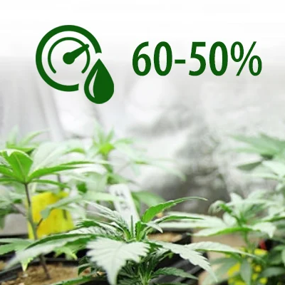
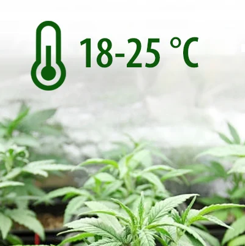
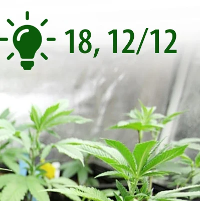

Spacer
Welcome to the Premium Seeds Grow Guide
Our mission is to provide top tier cannabis genetics at local prices ands provide a wealth of knowledge of industry standards and best practices for cultivating cannabis in the South African context.Preparation
Getting everything prepared and ready to plant your cannabis seeds.Growing quality cannabis can be a challenge, and there are few things as disappointing as your plant babies dying somewhere along the growing process. Even if you don’t exactly have green fingers, the guide below should have you yielding some good quality herbs in no time. This guide is specifically for outdoor growing. With indoor controlled environment growing you are in control and you can germinate and plant any time of the year. As always, remember to keep the legalities of planting weed in mind before you get started. One thing that is not negotiable is that plants need a minimum of 12 hours direct sunlight per day. With the decriminalisation of cannabis for personal and private use in South Africa, you’re probably wondering how to plant your own cannabis at home. To know when we reach 12 hours sunlight as we go into spring, keep an eye on the September equinox date: Spring equinox This in only a general guideline and conditions can vary widely between provinces in South Africa. Natural & biological farmers would always advise observing what nature is doing and adapting to it. So in other words just be aware of what other plants and weather patterns are showing you. Grow Cannabis from Seed to Harvest With an overwhelming amount of information on cannabis planting available, it can be hard to know where to start. With this quick guide though, you’ll be a happy pot planting pro in no time. How long does weed take to grow? Regular cannabis plants generally take anywhere from 5 to 8 months to fully grow from seed to harvest. Other factors may which include, the cannabis strain, the expected yield, and the grow setup, will also impact the time it takes to grow your cannabis plant(s). Understanding Cannabis Seeds The first step in growing cannabis at home is to find or buy cannabis seeds. You can pick up a pack of 20, 50 or 100 Premium Regular Cannabis Seeds for R300, R500 and R800 respectively. There are many uses for the male cannabis plant, including harvesting the pollen to create your own hybrids. However, to grow the sticky resinous buds we all know and love, you'll need the female plants and the female plants alone! Male plants grow pollen sacs and pollinate the female plant, once pollenated, seed production starts meaning THC production stops. What we want is an environment where the female plants are able to grow ‘sinsemilla’ (which means without seed) in order to yield the best harvest. South Africa has a diverse range of climates and micro-climates mostly ideal, or even perfect for growing cannabis outdoors when planted at the right time and if you follow good growing techniques. Beyond the seasons we also have to consider sun and moon timetables, to plan and optimise your outdoor grow.
Germination
Tried and tested techniques for germinating your cannabis seeds.Germination is the first part of your grow cycle and a very important step into you success at growing beautiful plants and buds! It’s as simple as seed + heat + moisture + oxygen = seed germination, but there are however various methods and tricks. Understanding the Anatomy of Cannabis Seeds The process of cannabis seed germination can take up to 10 days, in order to do everything correctly and know if everything’s going well, we need to know a little bit more about the seed. First of all, we need to understand the anatomy of a cannabis seed. The cannabis seed has a dark brown, hard, and often striped, shell, this shell is what protects the insides which are extremely fragile. When germinating, we need to hydrate the seed, this will soften the seed’s shell and allow water to reach the embryo, when the water reaches it, the embryo will “activate” and start developing. Bare in mind that it is possible to drown the seed, so we need to keep an eye on moisture levels, also making sure it doesn’t dry out. With a softened shell, it will be easier for the radicle to come out and this is when you’ll see the white taproot slowly appearing, and once it reaches 2-3cm, it’s time to plant it. As soon as the seedling comes out of the medium, you’ll often see the shell stuck on top of the cotyledons, which are the tiny round leaves that you’re able to see once the shell has detached from the seedling. Those leaves are responsible for feeding the plant until the first set of true leaves appear. Also, there isn’t the best way to germinate marijuana seeds, you can do it any way you want, as long as you keep proper conditions, your seeds will germinate. Ideal temperature between 21-27°C, ideal is 24’C. Ideal humidity between 70 – 90%, higher is better. It’s important to maintain the temperature and humidity so that at no time it overheats or dries out. 5 TRIED AND TRUSTED SEED GERMINATION METHODS 1. PAPER TOWEL GERMINATION METHOD The paper towel method is the easiest of all methods. You’ll need : 2 paper towels a plastic container or plates water STEP 1 Moisten the paper towels and wring them out so they’re damp but not completely wet. STEP 2 Place the seeds on the paper towel, fold it over the seeds and place it in a plastic container, cover it with the lid to keep moisture in (can also use two plates instead of the plastic container, place the paper towel on a plate and use the other one to cover). STEP 3 Place the container in a slightly warm and dark place. Remember to check on it daily, we must ensure the paper towels never dry out, the seeds need to keep absorbing moisture, it’s likely that the seeds will never germinate if they don’t. Sprinkle a little bit of water if needed, you’ll know they’re ready to be transplanted when the radicle is around 1-3cm long. TIP: If the paper towel starts having a bad smell, it’s a sign of too much water, let it dry for a couple of days, and if the papers continue smelling bad, change the paper towels. 2. SOAKING OVERNIGHT IN A GLASS OF WATER After many years of experimenting and looking for the best way to germinate cannabis seeds, we must say that this is definitely one of the most effective ways. This method is especially effective for seeds with a harder shell or older seeds. You’ll need: Glass cup Water STEP 1 As the title says, grab a glass cup and fill it half with water. Soaking the seeds in water is the best way to germinate seeds, especially older seeds. STEP 2 Place the seeds in the glass and leave it in a dark place, let the seeds soak for up to 32 hours. STEP 3 Most viable seeds will sink after a couple of hours and you should see the radicle after a couple of days. Remember that some seeds may need longer until you see the radicle coming out. If they haven’t sprouted after 72 hours, add a few drops of hydrogen peroxide to kill accumulated bacteria in the water and return to the darkness for 2 more days. 3. USING A GERMINATION CHAMBER When you get a bit more experienced, you’ll wanna look for more professional tools and the germination chamber is one of them. It consists of a plastic base with small square cells (can come with up to 256 cells, each cell supports 1 seed), on top of a heat mat, also comes with a humidity dome, basically looks like a small greenhouse. They’re very cheap and you can make one at home. A germination chamber is ideal when you have to germinate a lot of seeds at once. The chamber can be used with any type of medium, Rockwool cubes, peat pellets, coco fiber, perlite, or even soil and they keep the best environment for sprouting seeds and the first days of the seedling. So how to germinate a marijuana seed in a germination chamber? To start germinating, make a small hole (1-2 cm) in moisten medium, cover without applying pressure, turn on the heat mat and spray the humidity dome, it should take a couple of days to see the seedling coming out. 4. ROCKWOOL CUBES AND PEAT PELLETS Rockwool cubes are small cubes made of rock and sand fibers, with the consistency of cotton candy almost, they absorb a lot of water and usually are used for germinating seeds and clones. Using them along with the germinating chamber has an advantage, being easy to transplant to the next medium or container. Rockwool and peat pellets are an easy way to germinate seeds but can be easier to overwater your seeds. They also can be used along with clay pellets in hydroponics. One of the bad aspects of Rockwool cubes is you can easily overwater and get root rot. Peat pellets are similar to the Rockwool cubes but are made of compressed peat moss and come in a small disc shape. To germinate in either one of them, we will use the same technique explained before, moisten the Rockwool or peat pellet, make a little hole (1-2cm) and place the seed inside, cover it gently without applying pressure and you’re all done. You can place the pellet or cube directly in any type of medium or hydroponics chamber, after sprouting, the roots will continue to grow down, even if they reach the end of the Rockwool or peat pellet. 5. PLANTING DIRECTLY IN MEDIUM Sometimes the simplest way is the better way. As it happens in nature, we can also sprout our seeds in our medium of your preference (coco, soil, perlite, etc..) Just grab a pencil, or even with your fingers, make a little hole (1-2cm deep), and place the seed in it, the medium must be moist but not soaking, then cover with soil without applying pressure. Planting directly in the medium is the best way to avoid stressing your plants due to transplanting. Every time you transplant a seedling, it needs some time to readjust and can cause stress, thus one of the biggest benefits of this method is you don’t have to worry about damaging your seedling when transplanting or shocking it because it already is in its final place. Germination Guide for Cannabis Seeds
Know Your Nutrients
Premium Grade Cannabis requires premium grade nutrients, or to put it another way... What you put in is what you get out!Nitrogen
For healthy vegetative growthPhosphorus
For strong, absorbant rootsPotassium
For bushy flowers and budsLife Cycle
Understanding the typical life cycle of a cannabis plant.Germination: 3-10 days - This is when you go from a seed buried under about 1cm of soil to a tiny little seedling sprouting out of the ground. Seedling: 2-3 weeks - That tiny little seedling sprout will grow from here into a small sized example of the fully grown plant, complete with the iconic "Weed Leaf". Vegetative: 3-16 weeks - At this stage the plant is only interested in growth, laying the infrastructure for the fully grown plant to grow upon. Flowering stage: 8-12 weeks - When you start to see the little white "hair like" bits poking out of the base area of new branches, you know your plant is entering the flowering stage. Germination Phase If you’ve ever had to sprout a bean between two paper towels for a primary school project, you’re already well equipped for this stage of the process. It’s best to germinate your seeds indoors, where you’ll have better control of the conditions the seeds are exposed to. Your plant is also less likely to be exposed to pests and mould. To germinate your seeds, you can either use the paper towel method or set it in some loose, airy soil. It’s essential that the seeds are kept in a warm (but not hot), dark space with a good level of humidity. Once a seed develops a radical (a single root), it’s ready to be transferred to some soil in a small container. Two cotyledon leaves will form on the top of the seed, seeking sunlight to fuel the plants’ growth. Seedling Phase Once your plant has grown a few small leaves, you’ve reached the seedling stage – congrats! As the plant grows, it’ll start to develop the well-known weed leaves with multiple ‘fingers’. During this stage, your plant is especially fragile, and extra care needs to be taken to ensure that the plant gets enough (but not too much) water. The plant will also need a lot of light (around 16 hours) to absorb as much energy as possible. You’ll need to monitor the humidity levels and keep the surroundings clean to avoid mould or disease on the plant. Try out mould-resistant cannabis strains if you’d like to be extra cautious. The seedling stage lasts about 2-3 weeks but may last longer. Once your plant starts developing leaves with full sets of blades (around 3-7 per leaf), it has reached the vegetative stage. Vegetative Phase During the vegetative stage, which lasts about 3-16 weeks, the real growth starts. The first thing you need to do is transplant it over to a larger pot, or into your garden, in some nutrient-rich soil. Nitrogen is a crucial nutrient during the vegetative growth stage. With its root system now more developed, the plant will start growing upward. At this point, your plant is growing tons of new leaves to absorb as much energy as possible – to help it develop flowers. This is also the best time to spot and remove any male plants. At this stage, the plant should be getting around 16-18 hours of light a day if grown indoors. If you’re growing your plant outside, it should be getting 6 hours of full sunlight exposure plus multiple hours of indirect sunlight. Flowering Phase This is the final stage of the weed growing process and where you’ll get to see the fruits of your patience and labour materialise. The flowering stage of cannabis lasts around 8-12 weeks and is triggered by a reduction of light. So if you’re growing your plants outdoors, the change of the season will determine the amount of light your plant is getting. If you’re planting indoors, you will need to change your light schedule to 12 hours of light and 12 hours of darkness each day. There are three different stages of cannabis flowering — pre-flowering, mid-flowering, and late-flowering. The first signs of the flowering stage are the small pistles (greenish-white hairs) that develop where buds will form. In the mid-flowering phase, the buds will start to plump up. The late-flowering stage is where the number of trichomes will increase, and the plant will get sticky. Once the pistles start to turn brown, you can consider harvesting the buds. Avoid harvesting or pruning your plant too early. Once you’ve gathered the buds, hang them upside down to let them dry out. Cannabis Plant Life Cycle - 4 key phases of cannabis growth:
Harvesting Your Cannabis Crop
The time has finally arrived and your cannabis plants are ready to harvest, but wait...Harvesting, Drying and Curing Your Cannabis Plant(s) As a grower, your knowledge of cannabis cultivation is incomplete without a guide to harvesting and curing cannabis plants. You can tell when your cannabis is ready for harvest according to the strain. Now, it's time for the delicate part and we are right on time to be your genie in a bottle – on a farm. We are here to ensure the fruits of your labour don't go to waste by helping you through the process of Harvesting & Curing Cannabis Plants. Imagine losing your precious dagga because you missed a single step while harvesting your cannabis plant. Even worse, you used the wrong equipment. These errors can be avoided if you read this article. With our guide, you'll discover that harvesting and curing your cannabis plant is relatively easy. We've provided all you need to know on how to harvest and cure dagga in South Africa. Preparation for Harvest Before you begin harvesting weed, you need to make sure they're actually ready by preparing them for harvest. How do you prepare your cannabis before harvest, you ask? Read along! Below are crucial steps to prepare for harvesting and curing weed: 1. Flush your plants: Flushing is basically bathing your plants to get rid of excess salt and minerals. It is highly recommended to start flushing 2 weeks for harvesting with clean, room temperature water. 2. Check for Impurities: Ensure you meticulously cross-check for pests and fungi on your plant. You'll also need to get rid of any damaged part of the plant. 3. Cut out oversized fan leaves: Large fan leaves are an indicator that your plants are thriving in a good environment. However, you may need to trim or cut them out, depending on your choice. Oversized fan leaves are usually less potent because they have lower trichome count. 4. Trim & collect sugar leaves: Sugar leaves around the bud should be trimmed and can be collected to make extracts as a by-product or in cooking with the correct oil extraction methods in place. Trimming of sugar leaves and be done wet or dry. When To Harvest Cannabis For Maximum Cannabinoids & Potency Harvesting weed is a delicate process whereby the grower has to take note of certain signs from the plant before deciding to harvest. Cannabinoids are the naturally occurring compounds that are found in Cannabis sativa plants. The most popular compound present in the plant is the delta-9-tetrahydrocannabinol (Δ9-THC), which is the main psychoactive ingredient in cannabis. It is the ingredient responsible for the 'high' feel when ingested. To get the most cannabinoids from your dagga, you need to know the right time to harvest. Each strain of cannabis is peculiar, so signs can vary. Notwithstanding, there are a few general signs to look out for: Curling and colour of buds: The fan leaves turn yellow and begin to fall off. Your buds should be ready for harvest when the curly hairs are darkened and are very curly. Size and weight of your branches: The buds become plump, showing that it's developed. At this stage, they look like they won't grow any larger. The branches become heavy and begin to hang lower due to the weight of the fully developed buds. Colour of trichomes: The entire growth and development of your cannabis relies primarily on the trichomes. Trichomes are sticky, shiny and tiny crystals that cover your plant buds. In the early stages of your growing phase, they'll appear to be clear and glassy but when your plant is mature, the trichomes turn glossy, glittery white. Alternatively, if you're looking for lower levels of THC and a more relaxing effect, you can wait for the trichomes to turn golden/amber before harvesting. Note that it can be helpful to observe the exact date your plants started flowering. Nevertheless, you shouldn't solely rely on it as your harvesting guideline because the growth span differs from strain to strain. It takes as early as 7-8 weeks for indica-dominant strains to finish flowering, while sativa-dominant strains can take up to 24 weeks at a time or longer. Now that you know what to pay attention to, it's time for the next part harvesting! How To Harvest Marijuana The entire harvesting process includes four essential parts; cutting down the cannabis plant, drying, trimming and curing it. When you want to start harvesting your cannabis, it is advisable to cut it down sectionally instead of cutting down the whole plant. Cut the cannabis plant into manageable arm lengths. This will ensure the buds dry uniformly. Additionally, harvesting your cannabis by sections saves you some time by allowing you to operate smoothly. There is more to the process of harvesting and curing if you want to grow cannabis like a pro. Essentially, you want to make sure you have all the necessary tools which begs the next question. What Equipment for Harvesting & Curing Cannabis? There is a handful of tools and equipment needed by every grower to successfully complete the entire harvesting process. They include: Nitrile Gloves: Wearing gloves prevents easy contamination of your buds and when you handle them. The nitrile gloves are perfect for harvest time and they are useful for a lot of activities like trimming of buds, routine checks etc. Pruning Shears: It helps with cutting branches and fan leaves precisely. Drying Rack: The drying rack is an equipment you can use to hang your cannabis plant for drying. Cleaning Wipes: These are multifunctional wipes used to clean and get rid of stubborn resins on various equipment in your grow room. Trimming Tray: It is used to collect residuals and resins while and after trimming your buds. Rubbing Alcohol: It is a solution which works as a disinfectant for your grow room tools as well as the entire workspace. Scissors: This is basically used to trim buds precisely. Pocket Microscope: This is a small handy microscope used to check on the trichomes on the buds of your cannabis plant. Scale: To weigh the buds when dry for comparative purposes and recording your goals. The aforementioned tools should always be present in your grow room to ensure an efficient cultivation process. Fortunately, many of them are easily accessible at a tested and trusted supplier of all things hydroponics. Now that you have an idea of each equipment and their use, let's head back to the remaining process of harvesting; trimming and drying. Some growers prefer to trim while the plant is wet while some others prefer drying it first. Whichever your preference is, we have the guide for you here!
Setting the Scene...
The Ideal Environmental Conditions for Cannabis Plants to Grow Best in South Africa.Humidity
Ideal humidity: 60% - 50%.
Temperature
Ideal Temperature: 18°C - 25°C.
Light Cycles
Ideal Light Cycle: Veg: 18/6 - Flower: 12/12
Drying/Curing your Harvest
Now comes one of the most important times in cultivating great quality cannabis.Dry Trimming & Wet Trimming Cannabis Trimming makes it easy to transfer the cannabis, and it also prevents a messy and haggard-looking bud. Trimming your cannabis plant means cutting off fan leaves and other extension from your bud, giving it the right shape. Firstly, if you prefer drying your plant before trimming, you'll need to prepare a drying room. Then, you'll hang your plants up to dry for a few days before trimming. We recommend a 10-14 days drying period; 10 days for loose buds and 14 days for denser buds. The dry room should be 15-16°c and 60% relative humidity. Furthermore, there should be an even air circulation without having direct air flow on drying buds. After the initial hang, buck the buds and place them into paper bags to sweat out all of the inner moisture to the surface. To trim successfully, you'll need to start with cutting off the big branches. Be careful around the buds. While trimming, make sure the branches are easy to handle. Once the trimming process is completed, your cannabis buds are ready for whatever use you grew them for. This equipment is available on Grow Guru; the No 1 hydroponic online site in South Africa where you can also learn all you need to know about growing cannabis. How To Cure Marijuana If you want to learn how to cure marijuana, be prepared to dedicate two weeks to six months to the complete removal of moisture from the plant. Curing is an age long practice of preserving food like meat and other degradable edibles, typically by using salt or sugar. Although it is safe to consume, cannabis is no meat; therefore, you don't require salt or sugar. So, what do you need to cure cannabis? Only patience and proper technique. We don't have much say on your level of patience but we do posses the guide for the latter. There are a few things to know before starting the process of curing your cannabis, which are: Avoid light exposure: Light shone directly on your weed can cause degradation and reduce its potency. It's advisable to keep them away from UV rays and sunlight. Protect your weed from high temperature: Like light, heat can also cause degradation of your weed and also reduce the potency of THC in it. It's best stored in a low temperature environment Maintaining proper humidity: Too much humidity can cause mold to develop on your weed and too low can cause it to become crispy. You should ensure it stays at the zone of 60-65% humidity. The Boveda Humidity Control Pack is perfect for curing jars and containers. Considering these factors, you can now get started on curing your cannabis correctly. While there are several ways to go about curing cannabis, grove bags are arguably the most effective and straightforward process. Let's take a look! Curing With Grove Bags Terploc Grove bags are the latest packaging modifications for curing and storage of cannabis. These bags ensure that your cannabis is kept at a proper relative humidity of 58-62%. Grove bags posses the following: Oxygen and humidity layers which work together to release oxygen and excess water vapor to prevent mold growth on the buds. Durability & Odor Layer which prevent the bag from punctures and external smell thus preserving the fresh smell of your cannabis. UV Layer that prevents extra light from penetrating the bag in order preserve the bud and avoid degrading of the buds. Before using the grove bags, the cannabis should be dried to at least a .45w water activity level or below to avoid microbial growth. As long as your cannabis is properly dried, you can place it in a grove bag. These bags work to create the perfect microclimate to cure your cannabis in but do not overfill the bags or pouches. Grove bags are specially designed to bring the internal environment into the 58-62% RH range and also outgas excess oxygen to reduce oxidation while curing. The Importance Of Curing Cannabis Food is cured to preserve its freshness, likewise cannabis. Proper curing of your cannabis plant preserves its youth and stops any degrading effect. From the moment the plant is harvested, it starts to degrade as enzymes and bacteria break down the terpenes and cannabinoids into unfavourable compounds. As a result, it greatly affects the plant's potency and reduces its quality. Regardless, the long-term process of curing cannabis kills all bacteria and enzymes that break down the plant matter. Curing ensures that the fresh scent and aroma of the plant remains no matter how long it has been harvested. It's no different from storing vegetables in the freezer except cannabis has to be kept at a particular relative humidity throughout the curing process. A proper curing process should take time if you seek a premium result; to create quality weed, patience is virtue. Harvesting and curing cannabis is generally a long and tedious process. Every grower needs to be patient while undergoing the process. This guide isn't just about how to harvest cannabis for dummies. As an expert, you can have the best methods to harvest and cure cannabis but slow and steady wins the race.